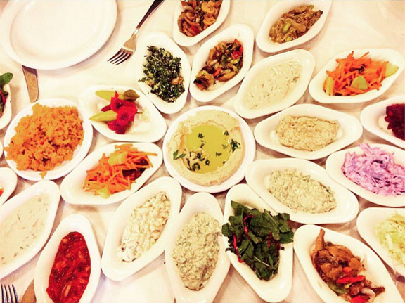
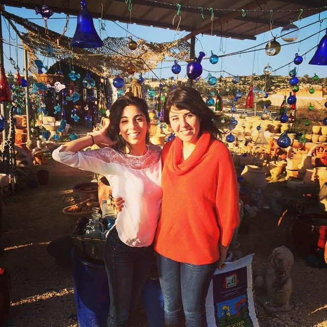
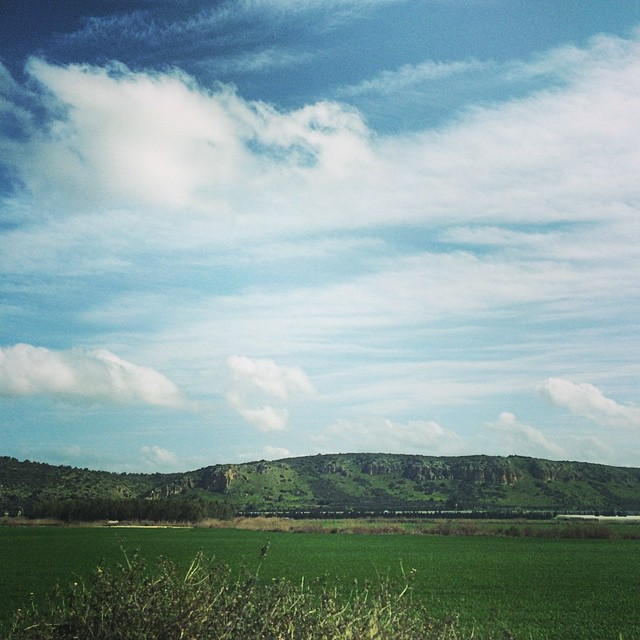
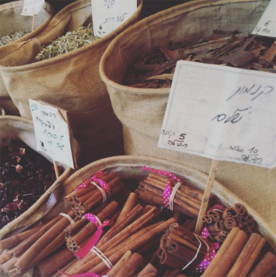
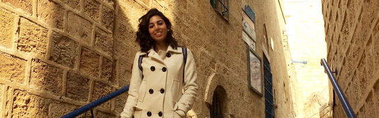
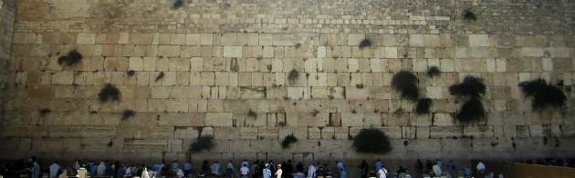
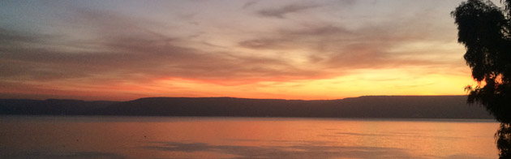
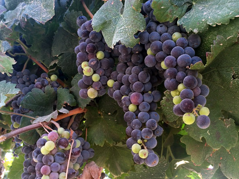

The best time to visit Israel is in the spring! Not too hot, still plenty sunny. You'll notice that if you try to do everything on this list you'll need AT LEAST a month in Israel - so I suggest you pick and choose for each trip, and leave some more incredible things to see for the next time you're there. Ideally, you would have 10-14 days to spend in Israel for your trip. For your first trip, I would recommending doing items #1-3 + one more (or two if short) that you find appealing.




Touring: For the more historic cities and sites, I'd recommend either getting a private tour guide, purchasing a travel guidebook, or doing some research online and printing some stuff out to read once you're there. (There's a lot of stuff that my tour guide in Nazareth told me for example that I would've never found online!) And always have water on you! Most importantly, enjoy:) Meet locals, visit friends, search for local festivals: beer, wine, food, film, music festivals, etc. 😊
Culture: Tough exterior, but warm and loving interior…Israelis are blunt, but full of love. I always feel like I need to explain this to those who haven't interacted with many Israelis before haha :) They aren't trying to be rude - but rather realize that life is too short to be anything but straight forward!
Money: Nearly every single store I've come across takes credit cards, but it doesn't hurt to have some cash on you. At markets, ALWAYS BARGAIN - 50% offer price, and be firm
Places to see and Things to do!
Tel Aviv and Yafo (2-4 days): 
> Tel Aviv: Spend a few days just chilling in Tel Aviv without too much of a plan. It's great for its beaches, shopping centers, restaurants, museums, beautiful parks, shuks, and nightlife. It's a good place to slow down the pace a bit in between exploring other parts of Israel (I think you'll appreciate Tel Aviv more after seeing more 'cultural' parts of Israel) but it can also be a great way to start the trip and get rid of your jetlag. It's also one of the few cities that doesn't completely stop on Shabbat, so you'll always have something to do. Walk along the promenade, wander around different neighborhoods of Tel Aviv like Rothschild, Neve Tzedek, Dizengoff, Tel Aviv/Herzeliya/or Yafa ports (from Herzeliya port you can take a 30 minute shared boat ride for $10 it was fun, may be able to do it from the other ports but I didn't try), try new foods, check out some of the different shuks like Sarona, hatikva which is more of a local authentic shuk, Carmel, pishpishim in Yafo, etc. Given all the beaches in the area, don't miss the beautiful sunsets that fall just over the water :) You can also do quite a few water sports there, and if you want an amusement park you can check out Luna Park. And bus system is great.
> Yafo:Yafo (or 'Jaffa') is the ancient port city from which Tel Aviv has grown, full of rich Jewish and Arab culture. Spend a day walking around old Yafo: check out Shuk Hapishpishim (flea market), have lunch or dinner at Hazaken ve HaYam (The Old Man and the Sea) or at Abulafia, an old Arab restaurant that has historically had a great relationship with Jews in the area (downstairs is shwarma, upstairs is more upscale, each of you should order something and then ask them to set up the table with all the free salads), after you've completed the walk from Abulafia down the path to the port (the long way, through all the old buildings and the wishing bridge or Zodiac bridge and the viewpoint over all of Yafo) then walk along the port, see the view of Tel Aviv, maybe swim at the Yafo beach, have Malabi for dessert from one of the stands (ask anyone they'll point you to one) - they may also have Faludeh (a delicious slushy persian rosewater drink!), enjoy sunset, check out some of the music events at night.
Jerusalem (3-5 days, weekend for full effect):  There's so much to do in Jerusalem and a trip to Israel isn't complete without it. See the city really come alive Friday night and Saturday when everything else comes to a halt: few to no cars/buses, shops closed, etc. It's purely then about love, family, tradition, reflection. Leave a note in the Western Wall, wander around the Old City and market ('shuk') - get lost (but not too lost…) in the Jewish and Christian quarters (the Arab quarter is also an adventure!), take a tour of the Western Wall tunnels, see the City of David, find a place to spend Shabbat, visit Mount Herzel, climb up or down (or both) the Mount of Olives, visit Yad Vashem Holocaust Museum, have a few drinks or enjoy hooka on Ben Yehuda street Thursday night! There's actually so much to do in Jerusalem that I recommend you google it instead of just going off of my recommendations! I would recommend arriving on a Thursday or early early Friday, before everything shuts down for Shabbat.
Dead Sea, Ein Gedi, Masada (3-5 days): The Dead Sea is fun, relaxing, healthy… full of history too. Stay at a resort (Herod's Hotel has a private beach and a fantastic food spread for breakfast and Friday dinner) or go to a public part of the beach and watch Jordan come into focus across the water during sunrise. Ein Gedi is fun for a dip under a waterfall and some outdoors treks/hikes. Masada is great for half a day trip when it's not too hot - people will typically aim to get up the 'mountain' before sunrise - the view (and the breeze) will take your breath away. You can take a lift up and walk around, or hike up on your own or with a tour guide (again recommended here just because of the knowledge they can impart on the complex history of the site), and you can also either walk down the snake path for 30-60 mins or take the lift back down. In that area are the caves where they discovered the Dead Sea Scrolls.
Tiberias/Sea of Galilee (2-3 days, or 4 days with Nazareth) with a pit stop at Daliyat: Tiberias is great getaway for a few days and a great chance to see a bit of Northern Israel - it has a different personality, different landscape. Get a hotel there for 2-3 nights, sit by the pool, get massages, swim in the Kineret (Sea of Galilee), do a tour of the area since there's a lot of biblical history there (Jethro's tomb and some other big sites). If you're there for long enough and are interested in seeing a bit of Arab life or Christian history, I'd also recommend a day trip to Nazareth, check out the two annunciation churches, eat some good Arab food and baklava, etc. Best with a private tour guide, I can help get you in touch with one. Do not miss: when driving from central Israel to this area, please take a short detour to visit Daliyat el Carmel, a Druze village that not only carries my name (hehe), but also is rich with its own culture and kind, tolerant religion. The Druze faith has a fascinating history and learning about it first-hand is an incredible experience that you shouldn't miss - as you leave the city heading north (or enter the city heading south), try to spot the tent on the side of the road that sells blown glass objects (the owner is a kind man, I can ask for better directions if you can't find it!), as well as the little stands that sell local food.
Bedouins in the Negev (2 days): Can totally be combined with a trip to Eilat or done on its own driving down from central Israel, but this is an experience you can't miss: Riding camels in the desert, sipping tea and coffee with the Bedouins, sleeping on a mat in a huge Bedouin tent, eating family style on the ground, it's all-around phenomenal.
Eilat (3-4 days): Eilat is basically a fun, relaxing, adventurous beach city where you can go snorkeling/scuba, party, enjoy the most incredible sea life of anywhere in Israel, and take some exciting hikes to see where Israel meets several of its neighbors - Egypt, Jordan, Saudi Arabia. Timna Park is supposed to be beautiful too, which is nearby.
Caesarea (1 day, or 2-3 days with Netanya): This is doable as a day-trip from Tel Aviv or a half day-trip on the way to Haifa or anywhere up north. See Roman King Herod's old kingdom by the sea in Caesarea! Plenty to see there, from the old ampitheater to the acqueduct, and even more history to learn - so join a tour group or do some reading :) Netanya, dubbed the 'Israeli Riviera' because of the huge French population there, is just a half hour south. Mainly just a relaxing city on the water with good restaurants, beaches, and some museums, as well as a water park and some water sports.
Haifa (3-4 days): Haifa is a port city in the north of Israel, known for its beauty and coexistence of all Israel's various faiths. It has many museums and art festivals. I don't know the city well, but I know many enjoy visiting. Just a few miles above Haifa is Akko/Akre, a UNESCO site and one of the oldest still inhabited cities in the world. See the crusaders fortress, the citadel, etc.
Other incredible places to visit:
Black Canyon, Tsfat

Vineyard at Kibbutz Hulda
Hiking in the Galilee
> Tsfat (beautiful, mystical, Kabalistic city above the Sea of Galilee, with outdoors sports at the Black Canyon)
> Akko/Akre (thousands of years old, UNESCO site near Haifa)
> Golan Heights (vineyards, Mount Tabor, wonderful hiking, but stick to the path because there are mines! My sister adds, "Once in a while, a cow blows up, but it's so worth it to go.")
> Beer Sheva (biblical Tel or prehistoric settlement mount in the Negev)
> Camping and swimming in maayans (underground reservoirs) is also a fun activity for longer trips, and you can find them all over Israel - some are centuries old and more!
> If you're looking for a really active trip, try doing the multi-week 'Sveel Israel' - which is a hike across Israel!
Kibbutz life! (2-3 days or more): Some of my best memories of Israel were the days I visited friends and family on various Kibbutzim. If you don't know anyone living in a Kibbutz, there are some that are open to guests! Most kibbutzim are no longer the rural, communal societies we think of that built Israel during its founding, but they still have a great community feel and some are still agricultural and fun to volunteer at and explore.
Foods to Eat (have fun pronouncing these)
Breakfast: Jachnun (yemenite-jewish), malawach, shakshuka (try restaurant: Dr. Shakshuka); borekas, rugelach and croissants from a bakery (Lechamim/Breads Bakery is great, but go for the small local ones!); challah bread with sour cream/cream cheese/guacamole/etc, baigaleh (it's kinda like a cross between a bagel and a pretzel - you'll find them at many of the small hole in the wall stands and bakeries and they make them sweet and savory), all sorts of white cheeses, Israeli salad (they eat it for breakfast), eggs benedict (try restaurant: Benedict's, I've had the smoked salmon one and the spinach eggs benedict, both amazing), etc.
Lunch: Shwarma in a lafa, falafel in a pita, shipudim which is shishkabob (chicken, beef, goose liver, etc on sticks), shnitzel on its own or in a baguette, hummus if you like hummus (they make plates of just hummus with meat or nuts or veggies etc and Israelis somehow eat that as a main course), baigaleh panini (you can put cheeses, meats, vegetables, etc - you'll find a lot of stands that have these), and both Israeli and Arab restaurants are huge on small salads like Babaganoush, Matbukha, tahini, cabbage salads, couscous salads, potato salad, olives/pickles/hot peppers, carrot salads, etc. Also some great bread: Pita (and za'atar pita)! Italian food is always great and any European dish here will be cooked pretty well. --- try other ethnic foods: Yemenite beef stew in shuk hatikva, Moroccan foods, Russian food, etc.
Dinner: A lot of the foods I mentioned above are also common for dinner, but you could probably go to nicer places. You can also try grilling on the beach! Many beaches have grilling areas (ask if you need some suggestions) and all you need is some seasoned meat, coal, and a grill cover (or a miniature grill, but some beaches have huge tins that you can use for grilling). If you want to try Bukharian food, which is of my mom's culture, you can go to Samarkand restaurant which is near Yafo/southern tel aviv and order Manti/Mantu or Goozhgoojeh (beef dumplings), Lagman soup (beef noodle soup), and a few sticks of liver, beef, chicken, lamb Shishkabob (shishlik/shipudim). Israel also has great seafood. You could also try Persian, Moroccan, Peruvian food, you name it. When Jews came to Israel, they brought the best food from all over the world… lucky for us we don't have to travel too far to try the world's most delicious foods :)
Deserts: Baklawa, knafeh, dried fruits, chocolate/poppy seed rolls, Malabi (you can usually find in the little stands/hole in the wall places, but also some middle eastern restaurants will sell it for dessert, or you can go to a more upscale malabi place in tel aviv called hamalabiya that has more types but honestly plain old malabi chalavi from a stand is the best - with syrup, coconut and nuts), falude (it's a slushy drink you'll only find at the stands that sell Malabi in Yafo or some other obscure places), ice creams… Israel also has really good chocolate lava cakes hehe. And you can google other stuff cuz I'm missing a lot lol
Drinks: Arak is a typical Israeli alcohol, made of licorice
Brunch/Dinner tips: Some great chain restaurants on the following ports: herzeliya, tel aviv, yafo like Kakao, benedicts; also some Israeli restaurants have great happy hours - ranging from discounts on main dishes to free drinks if you come before 8pm. Look some up on tripadvisor (I'd been to dalida and night kitchen before 8 - food was good not great but it was like 'gourmet' food for half the price - see if the menus suit you, but also definitely look up some places in advance)
 The Dead Sea is fun, relaxing, healthy… full of history too. Stay at a resort (Herod's Hotel has a private beach and a fantastic food spread for breakfast and Friday dinner) or go to a public part of the beach and watch Jordan come into focus across the water during sunrise. Ein Gedi is fun for a dip under a waterfall and some outdoors treks/hikes. Masada is great for half a day trip when it's not too hot - people will typically aim to get up the 'mountain' before sunrise - the view (and the breeze) will take your breath away. You can take a lift up and walk around, or hike up on your own or with a tour guide (again recommended here just because of the knowledge they can impart on the complex history of the site), and you can also either walk down the snake path for 30-60 mins or take the lift back down. In that area are the caves where they discovered the Dead Sea Scrolls.
The Dead Sea is fun, relaxing, healthy… full of history too. Stay at a resort (Herod's Hotel has a private beach and a fantastic food spread for breakfast and Friday dinner) or go to a public part of the beach and watch Jordan come into focus across the water during sunrise. Ein Gedi is fun for a dip under a waterfall and some outdoors treks/hikes. Masada is great for half a day trip when it's not too hot - people will typically aim to get up the 'mountain' before sunrise - the view (and the breeze) will take your breath away. You can take a lift up and walk around, or hike up on your own or with a tour guide (again recommended here just because of the knowledge they can impart on the complex history of the site), and you can also either walk down the snake path for 30-60 mins or take the lift back down. In that area are the caves where they discovered the Dead Sea Scrolls.